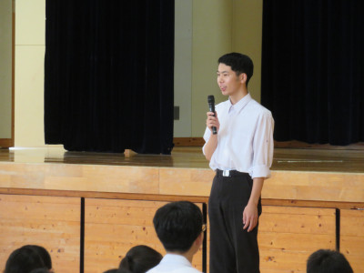
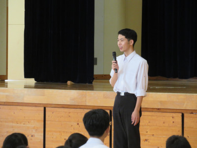

鳥取東高校の２学期，スタート！ ～熱いメッセージの続いた始業式～
2024年8月20日 09時48分長かったようで短かった夏休みを終え，本日から，鳥取東高校の２学期がスタート。始業式では猛暑に負けぬ熱いメッセージが続きました。

長かったようで短かった夏休みを終え，本日から，鳥取東高校の２学期がスタート。始業式では猛暑に負けぬ熱いメッセージが続きました。
猛暑真っただ中の8月２日，３日。鳥取西高生そして鳥取東高生のための東京大学キャンパスツアーが行われました。
これは鳥取県教育委員会高等学校課「学校連携サポート事業」の一環として鳥取西高校が主体となって企画されたものです。鳥取西高校さんのご厚意でお声かけいただき，鳥取西高生と本校生とが合同参加するかたちで実施されました。
本校からは２名の生徒が「本気モード」で参加。濃密かつ濃厚な２日間を過ごしました。
本校では、毎年夏休み期間中に職員対象の救急救命講習会を実施しています。今年も、赤十字救急法指導員である本校の本田 義志教諭を講師に心肺蘇生法などの講習を受けました。
７月２９日（月）、本校の１年生２人と２年生１人が、鳥取県議会・議会棟で行われた、「令和６年度高校生議会」に参加しました。
鳥取東高は明日から夏休みに入ります。そこで，１学期最終日となった本日，夏休み中に全国インターハイ等，高校生なら誰でもが憧れ，出場を目指す全国大会やコンクールに出場する生徒に「チーム東高」として心からのエールを送る壮行会を開催しました。
その後に行われた１学期終業式とあわせ，その模様をお伝えします。

本校は鳥取県教育委員会から「英語教育重点校」の指定を受け，英語ディベート等の発信型授業をとおして生徒の実戦的な英語力と国際感覚を鍛えています。
その一環として昨日（７月17日），３年選択授業「キャリアアップ英語」の授業において，東高生徒（３年生）と英語科職員を対象に，社会的なテーマについて同授業選択者が考察してきた結果を発表するとともに，このテーマについてともに考えることを目的とした英語プレゼンテーションを開催しました。
鳥取東高生は，高校生であるとともに地域社会の一員。ふるさと・鳥取をより魅力ある社会にするため，東高生にできることもすべきことも当然あります。東高生も高校在籍中に成年を迎えるだけに，どの生徒にも「近未来の主権者としてできる実践」に取り組める場を提供できれば…と鳥取東高校はそう思っています。
このたび，鳥取市議会様からのご提案により，５年ぶりとなる「鳥取市議会 議会報告会・意見交換会」が鳥取東高を会場に開催されました。この企画に，１年生６名が自主的に参加！この６名から提案された３つの市政上の課題について活発に意見交換を行いました。
７月１７日（水）７・８限、「総合的な探究の時間」DREAMSプロジェクト発表会（１年生）を行いました。
7月16日は、１年生による球技大会でした。遠足以来のクラス対抗の大会とあって、球技大会最終日に相応しく、大いに盛り上がっていました。
７月１２日は、３年生の球技大会でした。前日よりかなり暑くなりましたが、日ごろの勉強疲れを発散するかのように、体育館内は元気な声援と好プレーであふれかえっていました。
 
